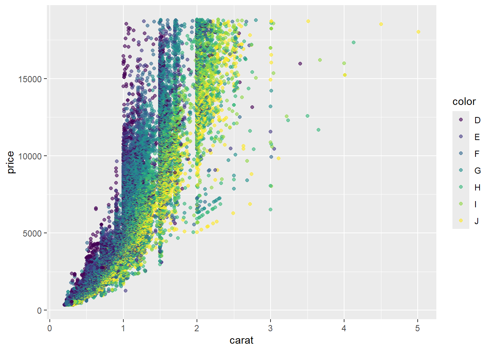

```{r}
#| label: chunk-name
# Here is where you place the R code that you want to run.
```Quarto - instructor notes
Adapted from: https://cforgaci.github.io/r-socialsci/08-quarto.html
Create a Quarto file
Quarto comes pre-installed with RStudio (as of v2022.07), so no action is necessary.
RStudio, click File -> New File -> Quarto DocumentClick on
Create Empty Document
Create a Quarto file
To control the output, a YAML (YAML Ain’t Markup Language) header is needed:
---
title: "My Awesome Report"
author: "Bilbo Baggins"
date: ""
format: html
---The header is defined by the three hyphens at the beginning (
---) and the three hyphens at the end (---).You can add more information about your document in the YAML header, that will provide more information about the document or change the behaviour of the file.
You can also adapt the
formatof the file, topdfordocx.
Markdown syntax
Markdown is a popular markup language that allows you to add formatting elements to text.
editing not visible in markdown -> markdown converted to other file formats.
Headings
A # in front of text indicates to Markdown that this text is a heading. Adding more #s goes makes heading smaller:
# Title
## Section
### Sub-section
#### Sub-sub section
##### Sub-sub-sub section
###### Sub-sub-sub-sub sectiononly use a level if the one above is also in use
probably not a great practice to have more than 3 subheadings.
Already have a title, so start from
##to create introduction
## IntroductionFormatting
_or*for italics__or**for bold``
forcode-type`You can use combination of those things (but do you realy want to?)
## Introduction
This report uses the `tidyverse` **package** along with the *diamonds* dataset,
which has columns that include:Lists
## Introduction
This report uses the **tidyverse** package along with the *SAFI* dataset,
which has columns that include:
- carat
- cut
- price
- color- You can also create an ordered list using numbers:
1. carat
2. cut
3. price
4. color- And nested items by tab-indenting:
- carat
+ weight of the diamond
- cut
+ quality of the cut
- price
+ price in US dollars
- color
+ diamond colour, from D (best) to J (worst)Now we can render the document into HTML by clicking the Render button in the top of the Source pane (top left), or use the keyboard shortcut Ctrl+Shift+K on Windows and Linux, and Cmd+Shift+K on Mac.
If you haven’t saved the document yet, you will be prompted to do so when you Render for the first time.
Writing a Quarto report
Now we will add some R code with some data wrangling and visualisation.
We need to make sure packages you need are loaded. We will use tidyverse .
It is not enough to load tidyverse from the console, we will need to load it within our Quarto document.
The same applies to our data.
To load these, we will need to create a ‘code chunk’ at the top of our document (below the YAML header).
A code chunk can be inserted by clicking Code > Insert Chunk, or by using the keyboard shortcuts Ctrl+Alt+I on Windows and Linux, and Cmd+Option+I on Mac.
The syntax of a code chunk is:
An Quarto document knows that this text is not part of the report from the ``` that begins and ends the chunk. It also knows that the code inside of the chunk is R code from the r inside of the curly braces ({}).
Below the curly braces, you can add code chunk options after the #| sign. In this way, you can for example add a label for the code chunk.
To load tidyverse we will insert a chunk and call it ‘setup’.
Since we don’t want this code or the output to show in our knitted HTML document, we add an #| include: false option after the curly braces.
```{r}
#|label: setup
#|include: false
library(tidyverse)
library(here)
diamonds_df <- diamonds |>
select(carat, cut, price, color)
```Insert table
We will now create a table with some summary statistics about the dataset.
Note
It isn’t necessary to Render your document every time you want to see the output. Instead you can run the code chunk with the green triangle in the top right corner of the the chunk, or with the keyboard shortcuts: Ctrl+Alt+C on Windows and Linux, or Cmd+Option+C on Mac.
To make sure the table is formatted nicely in our output document, we will need to use the kable() function from the knitr package. The kable() function takes the output of your R code and renders it into a nice looking HTML table. You can also specify different aspects of the table, e.g. the column names, a caption, etc.
Run the code chunk to make sure you get the desired output.
diamonds_df |>
filter(!cut %in% c("Fair", "Good")) |>
group_by(cut, color) |>
summarize(mean_price = mean(price)) |>
knitr::kable(col.names = c("Cut", "Color",
"Average Price"))| Cut | Color | Average Price |
|---|---|---|
| Very Good | D | 3470.467 |
| Very Good | E | 3214.652 |
| Very Good | F | 3778.820 |
| Very Good | G | 3872.754 |
| Very Good | H | 4535.390 |
| Very Good | I | 5255.880 |
| Very Good | J | 5103.513 |
| Premium | D | 3631.293 |
| Premium | E | 3538.914 |
| Premium | F | 4324.890 |
| Premium | G | 4500.742 |
| Premium | H | 5216.707 |
| Premium | I | 5946.181 |
| Premium | J | 6294.592 |
| Ideal | D | 2629.095 |
| Ideal | E | 2597.550 |
| Ideal | F | 3374.939 |
| Ideal | G | 3720.706 |
| Ideal | H | 3889.335 |
| Ideal | I | 4451.970 |
| Ideal | J | 4918.186 |
When you are generating a table in Quarto the label should be prefixed with tbl-, e.g. tbl-diamonds.
You can add a caption to the chunk options with tbl-cap: "Your caption here".
```{r}
#| label: tbl-diamonds
#| tbl-cap: "A useful description about the table."
#| eval: true
#| echo: true
diamonds_df |>
filter(!cut %in% c("Fair", "Good")) |>
group_by(cut, color) |>
summarize(mean_price = mean(price)) |>
knitr::kable(col.names = c("Cut", "Color",
"Average Price"))
```| Cut | Color | Average Price |
|---|---|---|
| Very Good | D | 3470.467 |
| Very Good | E | 3214.652 |
| Very Good | F | 3778.820 |
| Very Good | G | 3872.754 |
| Very Good | H | 4535.390 |
| Very Good | I | 5255.880 |
| Very Good | J | 5103.513 |
| Premium | D | 3631.293 |
| Premium | E | 3538.914 |
| Premium | F | 4324.890 |
| Premium | G | 4500.742 |
| Premium | H | 5216.707 |
| Premium | I | 5946.181 |
| Premium | J | 6294.592 |
| Ideal | D | 2629.095 |
| Ideal | E | 2597.550 |
| Ideal | F | 3374.939 |
| Ideal | G | 3720.706 |
| Ideal | H | 3889.335 |
| Ideal | I | 4451.970 |
| Ideal | J | 4918.186 |
Customising chunk output
We mentioned using include: false in a code chunk to prevent the code and output from printing in the rendered document. There are additional options available to customise how the code-chunks are presented in the output document. The options are entered in the code chunk using the ‘hash pipe’, #|.
| Option | Options | Output |
|---|---|---|
eval |
TRUE or FALSE |
Whether or not the code within the code chunk should be run. |
echo |
TRUE or FALSE |
Choose if you want to show your code chunk in the output document. echo = TRUE will show the code chunk. |
include |
TRUE or FALSE |
Choose if the output of a code chunk should be included in the document. FALSE means that your code will run, but will not show up in the document. |
warning |
TRUE or FALSE |
Whether or not you want your output document to display potential warning messages produced by your code. |
message |
TRUE or FALSE |
Whether or not you want your output document to display potential messages produced by your code. |
fig-align |
default, left, right, center |
Where the figure from your R code chunk should be output on the page |
Exercise
Play around with the different options in the chunk with the code for the table, and re-Render to see what each option does to the output.
What happens if you use eval: false and echo: false? What is the difference between this and include: false?
Solution (Solution to Exercise). Create a chunk with eval: false, echo: false, then create another chunk with include: false to compare. eval: false and echo: false will neither run the code in the chunk, nor show the code in the rendered document. The code chunk essentially doesn’t exist in the rendered document as it was never run. Whereas include: false will run the code and store the output for later use.
In-line R code
To use in-line R-code, we use the same backticks that we used in the Markdown section, with an r to specify that we are generating R-code.
The difference between in-line code and a code chunk is the number of backticks.
For example, today’s date is `r Sys.Date()`, will be rendered as: today’s date is 2024-10-23.
The code will display today’s date in the output document (well, technically the date the document was last rendered).
The best way to use in-line R code, is to minimise the amount of code you need to produce the in-line output by preparing the output in code chunks.
Let’s say we’re interested in presenting the average household size in a village.
# create a summary data frame with the mean price by cut
mean_price <- diamonds_df %>%
group_by(cut) %>%
summarize(mean_price = mean(price))
# and select the village we want to use
mean_ideal <- mean_price %>%
filter(cut == "Ideal")Now we can make an informative statement on the means of each cut, and include the mean values as in-line R-code. For example:
The average price of ideally cut diamonds is `r round(mean_ideal$mean_price, 2)`$.
becomes…
The average price of ideally cut diamonds is 3457.54$.
Because we are using in-line R code instead of the actual values, we have created a dynamic document that will automatically update if we make changes to the dataset and/or code chunks.
Plots
Plots created in Quarto should have a label prefixed with fig-, e.g. #| label: fig-fancy-plot.
diamonds_df %>%
ggplot(aes(x = carat, y = price)) +
geom_point(aes(color = color), alpha = 0.6)

We can also create a caption with the chunk option fig-cap: "Caption here", and add some nicer labels using the labs() function.
```{r}
#| label: fig-diamonds-plot
#| fig-cap: "Yet another diamonds plot"
#| echo: true
#| eval: false
diamonds_df %>%
ggplot(aes(x = carat, y = price)) +
geom_point(aes(color = color), alpha = 0.6)+
labs(x = "Diamond weight (carat)", y = "Diamond price ($)", color = "Color")
```why put prefix in the labels of your tables in figures?
It allows you to cross-reference them in the text of your document, and it requires that the label is unique, and that they have the correct prefix.
For example, we can talk about the table we made earlier and reference it using the label @tbl-diamonds, which, when rendered, becomes Table 1.
We can do the same with our figures. For example, @fig-diamonds-plot becomes Figure 1. The number will of course depend on whether any plots or figures comes before it, but since you just need to reference the label, there’s no need to know what number a specific plot has in a document.
Other output options
You can convert Quarto to a PDF or a Word document (among others). Put pdf or word in the initial header of the file to indicate the desired output format.
---
format: word
---Resources
- Markdown tutorial
- Official Quarto website (comprehensive resource of tutorials and documentation)
- Welcome to Quarto - workshop by Posit (former RStudio)
- R Markdown: The Definitive Guide - book by the RStudio team on R Markdown, the predecessor of Quarto